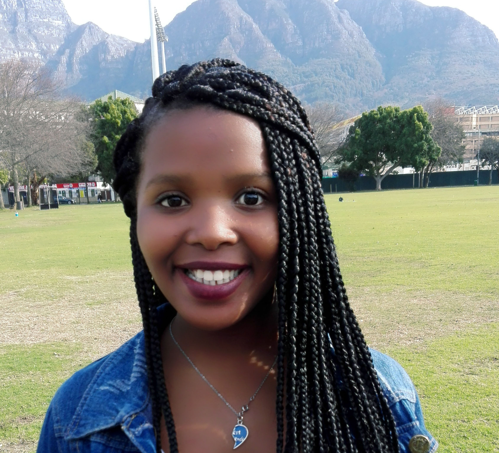
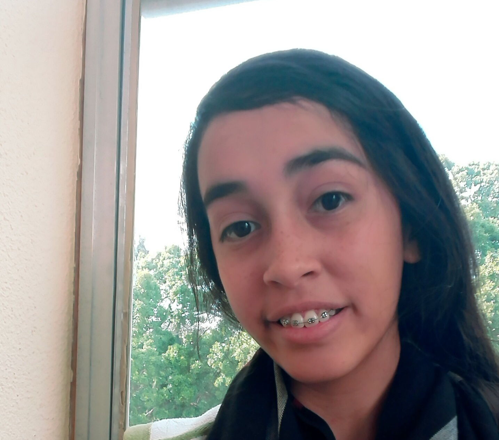

The Beautiful Women Behind Bursary Finder
School: Cloetesville High School
Done likes the HTML part of coding because she likes putting things in order. She wants to become a programmer because she finds coding interesting. Her hobbies is playing hockey and computer programming.
School: Centre Of Science And Technology
Mihle enjoys coding especially with doing JavaScript and she likes to explore new things. She is still hasn't decided of what career she wants to be in future she definitely wants to help people when she is older and change people's lives. Her inspiration is her mother as she says she is the one that motivates her to do great things in life.
School: Makupula High School
Avuyile enjoys doing CSS in coding because she is very creative. She wants to be a business woman so that she can employ people in her company because she wants to decrease the unemployment rate of South Africa. Her inspiration is her mother because her mother tells her how life goes and she motivates her on not making mistakes in life.
School: South Peninsula High School
Fatimah likes coding because she is able to create something from just using code and that anyone can code. In the future, she wants to go into the medical field because she wants to be able to try and save people’s lives. Her inspiration is her family and people who after all their struggles they went through, got back up again and faced through it, which encourages her to never give up. Fatimah is obsessed with kpop and likes reading books and manga in her free time.
